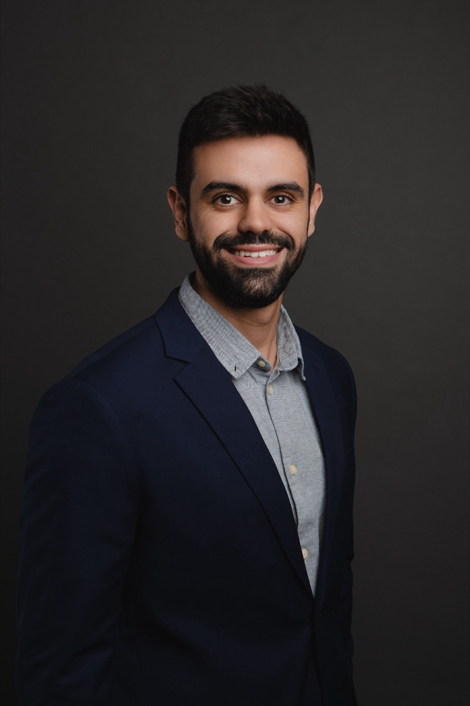
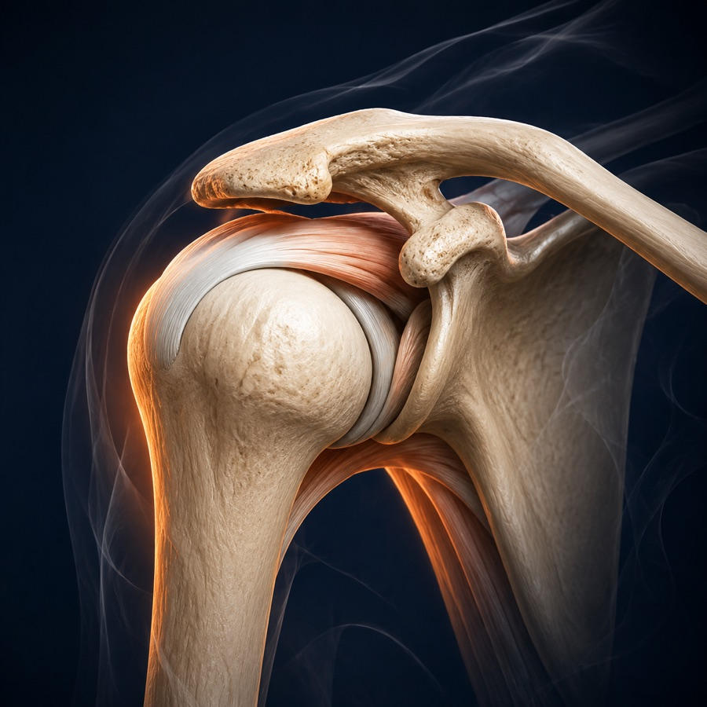
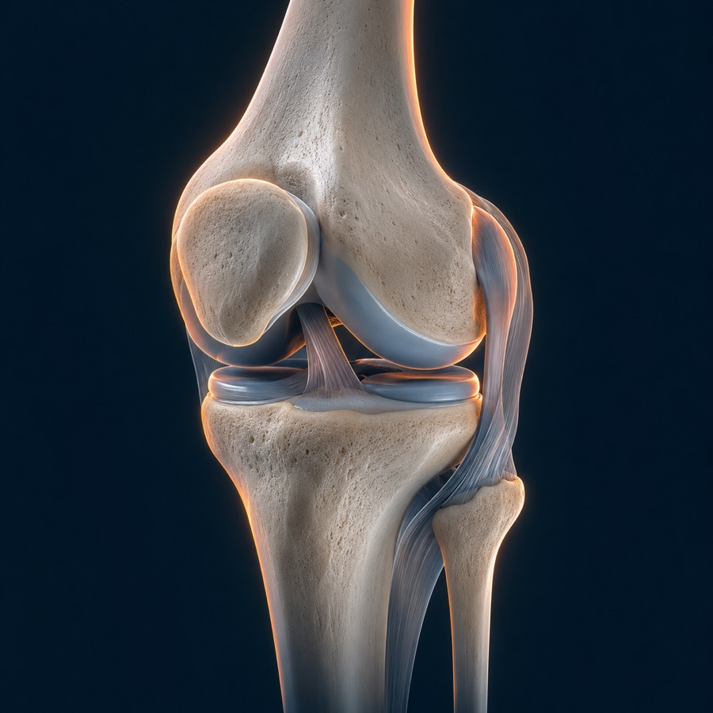
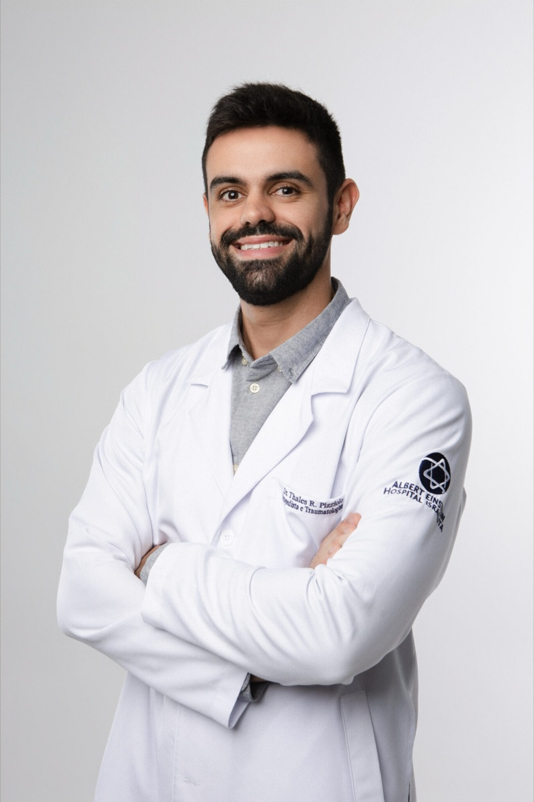
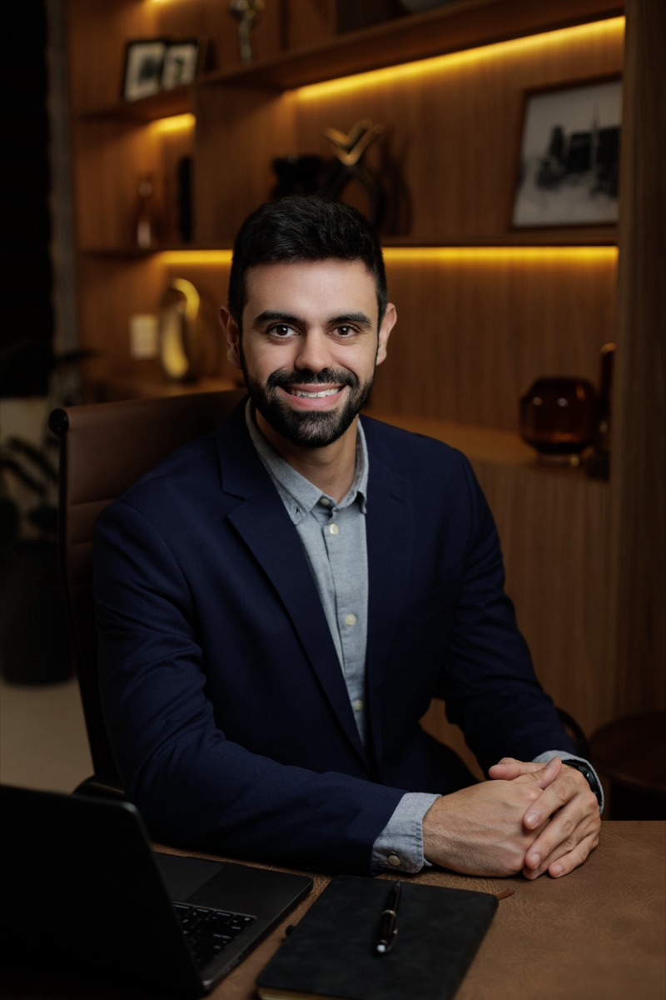

Dor no ombro, cotovelo ou joelho? Ortopedista especialista em Vila Mariana, São Paulo
Atuação em trauma esportivo e artroscopia. A avaliação começa entendendo sua lesão — e o tratamento conservador é considerado antes de qualquer cirurgia.

Três articulações. Nada além delas.
Atender só ombro, cotovelo e joelho é uma escolha. Concentrar o estudo e a prática em três articulações permite um olhar mais aprofundado sobre cada uma. Atendimento a partir de 14 anos.

Ombro
Bursite, tendinite, lesões do manguito rotador, luxações, instabilidade e traumas ligados ao esporte.
Ver avaliação de ombro
Cotovelo
Bursite, epicondilite, cotovelo de tenista, dores por sobrecarga e lesões que limitam a função.
Ver avaliação de cotovelo
Joelho
Tendinite patelar, bursite, lesões ligamentares e de menisco, desgaste articular e lesões esportivas.
Ver avaliação de joelhoA melhor qualidade do cirurgião é saber não indicar uma cirurgia.
Como funciona o atendimento
O objetivo não é mandar você parar. Sempre que for clinicamente seguro, adaptamos sua atividade durante a recuperação.
Entender
Escutar sua história, seu esporte e o que você quer voltar a fazer.
Explicar
Mostrar com clareza o diagnóstico e as possibilidades reais de tratamento.
Tratar
Priorizar opções conservadoras e menos invasivas quando indicadas.
Retornar
Planejar uma volta segura e progressiva à atividade física.

Ortopedia para quem quer continuar em movimento
Sou médico ortopedista com atuação em trauma esportivo e artroscopia. Minha abordagem começa por um princípio simples: você precisa entender sua lesão e o motivo de cada etapa do tratamento.
Construo uma estratégia individualizada, priorizando tratamentos não cirúrgicos e minimamente invasivos quando indicados — sem perder de vista a atividade que faz parte da sua vida. Corredor de rua e praticante de musculação, conheço de perto o valor que o esporte tem na rotina de cada pessoa.
- UFMAGraduação em Medicina
- INTO · Rio de JaneiroResidência em Ortopedia e Traumatologia
- Instituto VITA · SPArtroscopia e Trauma Esportivo
- SBOTMembro titular da Sociedade Brasileira de Ortopedia e Traumatologia
- CRM-SP 213316RQE 125841
Do cuidado conservador à cirurgia — apenas quando necessária
Tratamento conservador
Medicação, reabilitação e adaptação das atividades conforme cada diagnóstico.
Infiltrações
Procedimentos selecionados para condições específicas, sempre após avaliação individual.
Procedimentos guiados
Precisão com auxílio de imagem para intervenções minimamente invasivas.
Artroscopia
Técnica cirúrgica minimamente invasiva quando há indicação adequada.
Cirurgia ortopédica
Planejamento cuidadoso, alinhado ao diagnóstico e aos objetivos do paciente.
Retorno ao esporte
Estratégia progressiva considerando força, função, segurança e modalidade.
A indicação de qualquer tratamento depende de consulta médica e avaliação individual.
Vila Mariana, no coração de São Paulo
Rua Domingos de Morais, 2781 14º andar · Edifício ArtworkVila Mariana · São Paulo/SP
Procedimentos cirúrgicos, conforme indicação e disponibilidade
- Hospital Vila Lobos
- São Luiz Anália Franco
- Hospital 9 de Julho
- Blanc
- São Camilo Ipiranga
Atendimento particular, sem convênio, com possibilidade de emissão de nota fiscal para solicitação de reembolso ao seu plano de saúde.

Informação clara também faz parte do tratamento
A consulta é o momento de entender seu caso em profundidade. Aqui estão respostas iniciais para as dúvidas mais comuns.
Toda lesão esportiva precisa de cirurgia?
Não. Muitas lesões podem ser tratadas de forma conservadora. A decisão considera o diagnóstico, a gravidade, as características e os objetivos de cada paciente.
Vou precisar parar completamente de treinar?
Nem sempre. Dependendo da lesão, pode ser possível adaptar o treinamento durante a recuperação, com orientação individualizada.
Quando devo procurar um ortopedista?
Dor persistente, perda de movimento, inchaço, instabilidade, redução de desempenho ou trauma merecem avaliação.
Como funciona o retorno ao esporte?
O retorno é progressivo e considera a recuperação da lesão, a função, a força, a segurança e as demandas da sua modalidade.
Infiltração é indicada para qualquer dor?
Não. Há diferentes procedimentos, e a indicação depende do diagnóstico e da avaliação individual.
O atendimento é por convênio?
O atendimento é particular, sem convênio. É possível emitir nota fiscal para que você solicite reembolso ao seu plano de saúde, conforme as regras do seu contrato.
Atende a partir de qual idade?
A partir de 14 anos, para atletas e para qualquer pessoa que queira se manter ativa.
Entenda sua lesão. Trate com propósito.
Agende uma avaliação e descubra as possibilidades de tratamento para o seu caso.
Agendar pelo WhatsApp